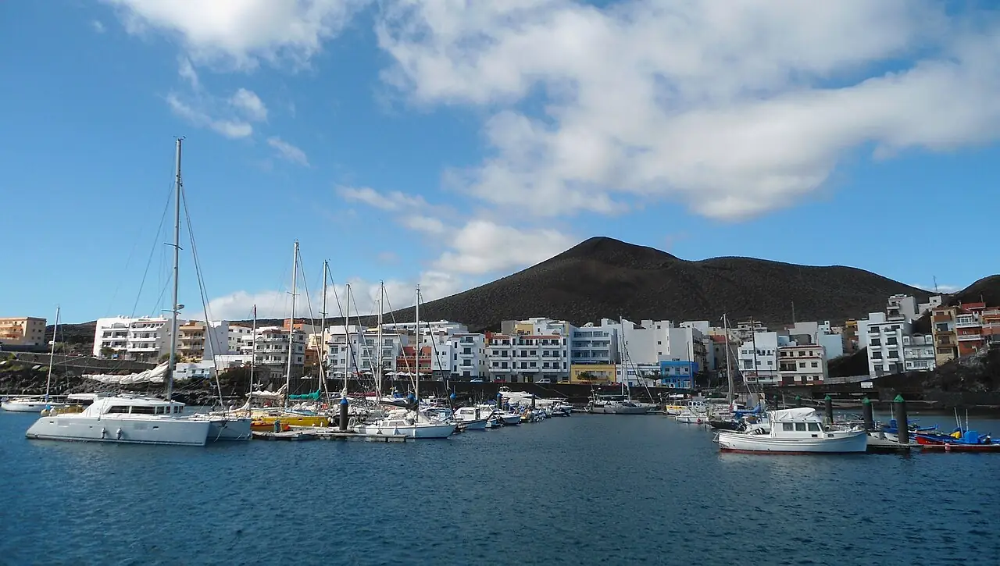

La Restinga — Mar de las Calmas
El Hierro, Canaries, Espagne · plongée

Petit port du sud d’El Hierro, porte d’entrée de la réserve marine de La Restinga – Mar de las Calmas. Tombants volcaniques, arches et eau claire en font l’une des destinations de plongée les plus réputées des Canaries.
- Lieu
- El Hierro, Canaries, Espagne
- Niveau
- Variable selon les conditions
- Activités
- plongée
- Type d'eau
- Mer / océan
- Coordonnées
- 27.64, -17.98 (position approximative du secteur)
Dangers à connaître
- Courants possibles sur les pointes et tombants profonds.
- Zone volcanique active : l’éruption sous-marine de 2011 a fermé les sites un temps, suis les consignes locales.
Le conseil d'Ocean Buddy
Plonge avec un centre du port : les sites de la réserve sont réglementés et certains demandent de l’expérience.
Ouvrir dans Ocean Buddy Télécharger sur l'App Store
Source : Fiche Ocean Buddy · septembre 2026 · à vérifier localement.